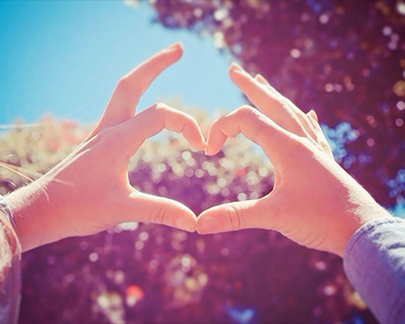

[本文转自松丫网-励志人生加油站]
1、原木家具表面有刮痕时，可先在其表面涂上鱼肝油，等鱼肝油晾干后用用湿布擦拭，就可以去除刮痕。
2、在生活中当你头痛时，一个简单的祛痛方法是：把苹果捣成泥状涂在纱布上，帖在额头，头痛就可以减轻。
3、现在很多人都会遇到脱发的情况，这个时候我们需要注意：勤洗头，勿用碱性肥皂。勤梳头，梳头时要用梳子，最好不要染发，也不要吃过辣、过酸的食物，经常保持精神愉快。
4、很多人面部起皱纹，这个时候可以这样做缓解皱纹。洗脸水宜30至40度，经常按摩面部，晚上睡前适当涂些营养霜，勿长期用单侧牙吃饭，枕头勿太高。
5、我们有时候会老是睡不着，这种情况如何防止
其实，很简单，睡觉前不要喝浓茶，不要用大脑深思考，辅助可以用热水加食醋泡脚，增进睡眠。
6、妇女经期有六忌：忌寒冷着凉、忌吃浓茶、过辣，忌饮冷食，忌盆浴 和游泳、忌同房、忌过度疲劳。
7、想要生一个智力较高的宝宝，那么你需要这样做：晚婚晚育，怀孕后不要吃辛辣的食物，经常保持乐观心情。在怀孕期间和哺乳期间注意饮食，不要喝可乐、咖啡、浓茶等。
8、多让孩子吃鹅蛋、鸽蛋、鱼头，那么孩子就会更聪明。
9、经常失眠和体重超标或65岁以上的人，心脏病和心肌梗塞的病人，这些人不适宜睡午觉。
10、哪些病人不能过性生活？患有传染病、性病、大病初愈或病中，妇女产前产后和经期，心脏病、高血压、肝炎、肾炎、肿瘤病人。
11、老年保健有九忌：忌过饱、过甜、过咸、厚腻、烟酒、大喜大怒、久蹲、懒散、便秘。
12、哪些人不宜喝啤酒？胃炎及溃疡病人、哺乳期妇女、秘尿系统结石和肝病人、儿童。
13、儿童生活有哪四不宜？不宜戴有色镜、不宜睡弹簧床、不宜穿高跟鞋、不宜烫发。
14、按电器开关或拿插头为什么最好用右手？因人的心脏在左侧，如遇漏电时用左手极危险。
15、远离充电座，人体应远离30公分以上，切忌放在床边。
16、多油脂的食物少吃，因为得花5~7小时去消化，并使脑中血液集中到大肠，易昏昏欲睡。
17、10种经常吃可以保持快乐的食物：深海鱼、香蕉、葡萄柚、全麦面包、菠菜、大蒜、番瓜、低脂牛奶、鸡肉、樱桃。
18、为什么常吃烘烤食物易患癌：因烘烤食物时燃料中会产生大量的二氧化碳、二氧化硫等致癌物质，这些物质会遗留在食物上，所以人吃多了极易患癌。
19、吃哪些蔬菜易中毒：1)发芽、发青的土豆有毒。 2)鲜黄花菜（即金针菜）有毒。 3)腌制未透的菜。 4)隔夜熟白菜、熟韭菜会将菜中的硝酸盐转化为亚硝酸盐，亚硝酸盐是强致癌物，熟白菜、熟韭菜放久了切勿吃。
20、蜂蜜和韭菜不能一起吃，或者饭前吃了蜂蜜，那么，吃饭时一定不要吃韭菜，因为同时吃蜂蜜和韭菜，会引起中毒。 蜂蜜也不能和豆腐一起吃，会引起耳聋；蜂蜜和洋葱一起吃，很伤眼睛；蜂蜜和鲫鱼一起吃，会引起中毒。